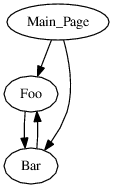

Visualizing pages graph in MediaWiki
The original question was originally posted on April 11, 2016 at MediaWiki Support Desk
I edit MediaWiki based wikis.
MediaWiki is a very powerful system and besides the web-based administration toolkit there are also a big number of maintenance scripts that are accessible via shell.
One of the scripts is dumpLinks.php that generates a plain text links dump.
Plain text is very simple, but this simplicity may not be very convenient for certain purposes. Let's convert it to a directed graph image to get a better visualization.
dumpLinks.php output
First off, let's make a quick analysis of dumpLinks.php results.
The output is just a set of lines split into fields split by a space (ASCII 0x20; spaces in page names are replaced with _).
Let's group those fields into the head and the tail, where head is the first field containing a page name, and the tail is the rest fields that are references to any other pages the head refers to.
Here is an example:
Main_Page Foo Bar Foo Bar Bar Foo
So the output above is literally The Main Page refers to both Foo and Bar, foo Refers to Bar, and Bar refers to Foo.
DOT
DOT is a very simple graph description language and it can be easily generated and easily processed by other tools. The plain text output above, in its DOT representation, may look as follows:
digraph wiki { "Main_Page" -> "Foo"; "Main_Page" -> "Bar"; "Foo" -> "Bar" "Bar" -> "Foo" }
The digraph section describes a directed graph where all vertices are linked with arrows.
Really simple, right?
dumpLinks.php output to DOT converter
The following script (plain-to-dot.sh) reads dumpLinks.php output from STDIN and writes the result into STDOUT:
#!/bin/bash echo 'digraph wiki {' while read ROW; do HEAD=$(echo "$ROW" | cut -d ' ' -f 1) TAIL=$(echo "$ROW" | cut -d ' ' -f 2-) # `cut` seems to return TAIL as HEAD if only one field is supplied if [ "$HEAD" != "$TAIL" ]; then for FIELD in $(echo -n "$TAIL" | tr " " "\n"); do echo -e "\t\"$HEAD\" -> \"$FIELD\";"; done fi done < "${1:-/dev/stdin}" echo '}'
The result
Once you have the graph, you can convert to PostScript using GraphViz, and then convert it to a PNG file using ImageMagick:
php maintenance/dumpLinks.php \ | ./plain-to-dot.sh \ | dot -Tps \ | convert ps:- png:- > wiki-links-graph.png
or alternatively use a pregenerated links file:
./plain-to-dot.sh < wiki-links.txt \ | dot -Tps \ | convert ps:- png:- > wiki-links-graph.png
And here is the result:

And here you can also download the PostScript file the image above was generated from.